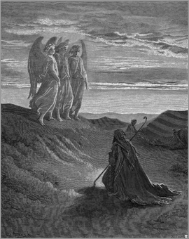

 Abraão (em hebraico: אברהם, Avraham ou ’Abhrāhām) é um personagem bíblico citado no Livro do Gênesis a partir do qual se desenvolveram três das maiores vertentes religiosas da humanidade: o judaísmo, o cristianismo e o islamismo.1 No entanto, os arqueólogos não encontraram nenhuma prova da existência de Abraão.2 É o primeiro dos Patriarcas bíblicos e fundador do monoteísmo dos hebreus.3